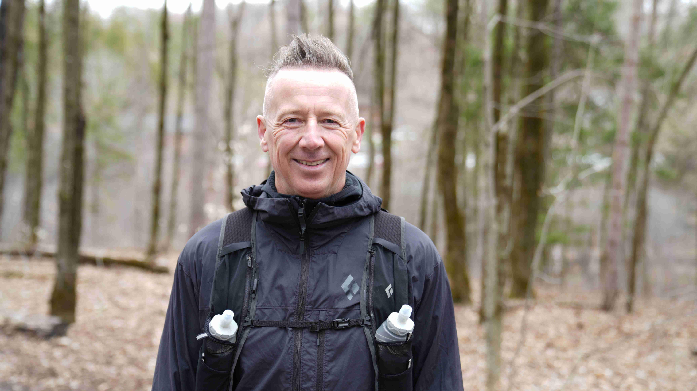

Un trek de 15 jours !
Une aventure humaine intense à travers montagnes, désert et villages marocains.
Maroc 2026 30 places
Osons, inspirons, sans frontières pour la cause
Trente personnes de l’Outaouais. Un trek de 15 jours dans le désert marocain. Une mission commune : faire avancer la santé d’ici. La Fondation Santé Outaouais lance le Défi Maroc 2026, un documentaire-aventure au profit du réseau de la santé.
Dernière ligne droite
Clôture le 20 mai 2026 à 23 h 59 · heure locale
Participe à un documentaire unique et transforme le réseau de la santé en Outaouais. Vivez une expérience inoubliable !
Une aventure humaine intense à travers montagnes, désert et villages marocains.
Un film inspirant pour raconter le dépassement de soi, la solidarité et l’impact réel sur le terrain.
Chaque pas contribue à soutenir une mission porteuse de sens et à aider concrètement des communautés.
Quinze jours, des montagnes volcaniques du Saghro aux dunes sahariennes du Drâa, jusqu’à la médina de Marrakech — selon l’itinéraire type de notre partenaire terrain Karavaniers (ajustements possibles sur place avec le guide).
Jours 1 et 2
Vol vers Marrakech, transfert à Aït Ourir, installation en maison d’hôte au pied du Haut Atlas.
Jours 3 à 7
Transfert par le col du Tizi n’Tichka, approche du Dadès, puis trek dans le massif volcanique avec les muletiers.
Jour 8
Route vers l’oued Drâa, ksours et oasis, dunes de Tidri — premier campement saharien sous les étoiles.
Jours 9 à 12
Hamada du Drâa, palmeraies et kasbahs, rencontres nomades, nuits au creux des dunes jusqu’à Ouled Driss.
Jour 13
Route par Tamgroute, halte possible à la bibliothèque coranique et chez les potiers, arrivée en riad dans la médina.
Jour 14
Journée libre : médina, place Jemâa el-Fna, souks et riads — repas du midi non inclus.
Jour 15
Transfert à l’aéroport selon l’horaire du vol — retour vers le Québec.
Quatre raisons qui valent le coup de se challenger pour de vrai.
Quinze jours dans le désert marocain, en équipe, avec une équipe de production qui capte chaque moment. Le voyage est entièrement pris en charge par la Fondation : vols, hébergement, repas, encadrement. Tu n’as qu’à dire oui.
Ton parcours sera raconté dans une série de huit épisodes. De ton casting jusqu’à ton retour, ton histoire devient celle qu’on regarde, qu’on partage, qu’on diffuse. C’est une expérience humaine qui laisse une trace concrète.
Tu ne fais pas ça seul. Tu rejoins un groupe de 30 personnes, sélectionnées au mérite, prêtes à se dépasser. Les liens qui se créent dans le désert ne se créent nulle part ailleurs.
Chaque kilomètre parcouru sert à transformer la santé d’ici. Tu mobilises ton réseau, tu fais avancer une cause, et chaque dollar amassé revient directement aux soins en Outaouais. C’est un défi qui change ta vie, et celle des autres.
Transparence totale avant que tu coches.

Stéphane est un entrepreneur accompli et un aventurier dans l’âme. Depuis 21 ans, il a grimpé les plus hauts sommets de chaque continent ! Aujourd'hui, il relève un nouveau défi. Mais il refuse de partir seul. Il souhaite emmener 30 personnes avec lui dans le désert marocain. Peut-être que tu feras partie de l’aventure.
La plus grande organisation philanthropique en santé et services sociaux de notre région. En partenariat avec le CISSS de l’Outaouais, elle investit dans 9 secteurs : milieu hospitalier, cancérologie, soutien aux personnes aînées, santé mentale, jeunesse, réadaptation, recherche, services sociaux et reconnaissance du personnel.
Pour de meilleurs soins, ici, chez nous!
fondationsanteoutaouais.caLe voyage est entièrement pris en charge par la Fondation Santé Outaouais : vols, hébergement, repas et encadrement sur place. Tes seules dépenses personnelles sont les vaccins, l’assurance voyage, le matériel personnel (sac de couchage, chaussures de marche, etc.) et tes dépenses sur place. Une liste complète te sera fournie si tu es sélectionné.
C’est le minimum pour que le défi ait un sens. Avec 30 participants, on vise 300 000 $ qui retournent intégralement aux soins de santé en Outaouais. Ce montant couvre largement la valeur du voyage offert et permet à la Fondation de remplir sa mission.
Tu auras une page personnelle de collecte en ligne dès le 1er juin, et ton réseau pourra contribuer en quelques clics. En mobilisant ton entourage et en approchant des entreprises, tu peux amplifier ton impact. Avec de la motivation, tout est possible !
Non. Ce n’est pas un marathon. C’est un trek dans le désert qui demande une bonne forme physique générale, mais pas une condition d’athlète d’élite. Si tu marches déjà régulièrement et que ta santé le permet, tu peux le faire. Une période d’entraînement de quatre mois est prévue avant le départ pour te préparer.
Tu remplis le formulaire sur cette page et tu téléverses une vidéo de présentation d’environ 60 secondes. Dans cette vidéo, tu te présentes, tu expliques pourquoi tu veux participer et comment tu comptes mobiliser ton réseau pour la collecte.
Si tu fais partie des candidats pré-sélectionnés, tu es invité à Gatineau le 23 mai 2026 pour une présentation en personne. Chaque candidat passera individuellement devant le jury pour une présentation chronométrée de quelques minutes, qui sera filmée (pour le documentaire et la sélection finale). Le jury écoutera ta présentation et prendra sa décision par la suite. Nous te contacterons après pour t’informer si tu es sélectionné ou non.
La sélection finale des 30 participants aura lieu dans les deux semaines suivant le casting. Tu recevras un appel personnel d’ici la fin du mois de mai. L’annonce publique se fera le 1er juin, accompagnée de la mise en ligne de la page de collecte.
Si tu n’es pas retenu, nous conserverons tes informations dans notre base de données afin de te proposer d’autres défis lors des éditions des années suivantes.
Le départ est prévu autour du 30 octobre 2026 et le retour autour du 15 novembre 2026. Les dates précises sont confirmées prochainement.
La Fondation collabore avec Karavaniers, un voyagiste spécialisé dans les expéditions accompagnées au Maroc. Tu es encadré du début à la fin par leurs guides expérimentés.
C’est un trek dans le désert, pas un séjour à l’hôtel. L’hébergement alterne entre bivouacs sous tente, gîtes traditionnels et nuits à Marrakech en début et en fin de séjour. Le confort est volontairement simple : c’est ce qui rend l’expérience marquante.
Tous les participants doivent fournir un certificat médical avant le départ. La décision finale d’aptitude appartient à Karavaniers, qui peut refuser un participant pour raisons médicales. Sur place, l’encadrement est formé à la gestion des urgences et l’évacuation est possible. Ton assurance voyage personnelle couvre les frais médicaux éventuels.
Tu n’as pas besoin d’être comédien, mais tu dois accepter d’être filmé tout au long de l’aventure : casting, séances de tournage, voyage. Le documentaire raconte une expérience humaine vraie, pas une mise en scène. Les participants les plus authentiques sont souvent les plus marquants.
Il y aura environ deux ou trois séances entre juin et octobre 2026, chacune d’une durée de deux à trois heures. Les dates seront planifiées en fonction de ton emploi du temps, dans la mesure du possible.
Une série de huit épisodes sera diffusée à compter de l’automne 2026 sur les plateformes de la Fondation Santé Outaouais (site web, réseaux sociaux, YouTube) . Le contenu est public.
Les images, vidéos et tout le contenu produit appartiennent à la Fondation Santé Outaouais. C’est un point essentiel du contrat que tu signeras si tu es sélectionné. La Fondation pourra utiliser ces contenus pour ses communications futures, sans limite de temps.
La Fondation t’accompagne tout au long de la collecte avec un suivi mensuel pour t’aider à atteindre l’objectif. Les conditions précises de gestion d’un objectif non atteint sont détaillées dans le contrat signé après la sélection. L’objectif est qu’aucun participant n’arrive au départ sans avoir atteint son palier.
Les conditions de désistement sont prévues au contrat. Plus le désistement est tardif, plus les implications sont importantes (la Fondation engage des frais auprès de Karavaniers dès la confirmation des participants). On comprend que la vie peut basculer ; on demande juste de communiquer le plus tôt possible.
Oui, à condition que chacun postule individuellement et soit sélectionné selon les mêmes critères. Le casting évalue chaque candidat sur ses propres mérites. Vous pourriez tous les deux être retenus, ou un seul, ou aucun.